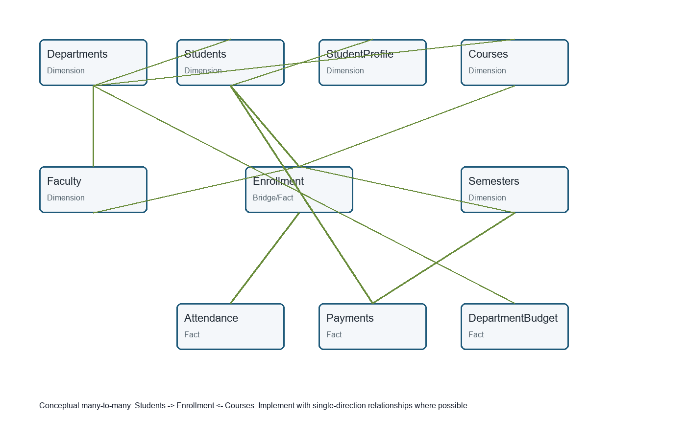

University Academic Analytics
Power BI-ready academic, enrollment, attendance, finance, and department analytics package built from synthetic data.
1,000Students
12,500Enrollments
22,577Attendance Records
40DAX Measures
Data Model

Power BI Note
Power BI Desktop was not available during automated build, so the live report link should be added only after the actual report is authored and published.